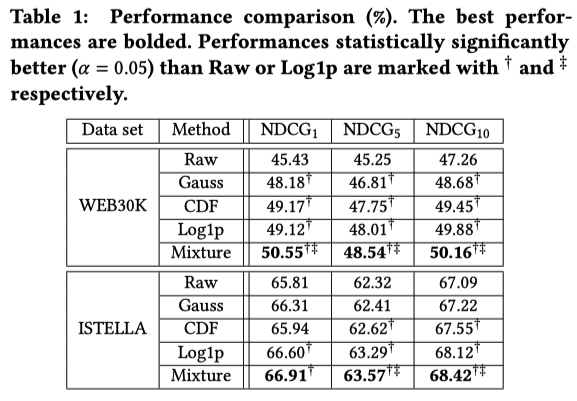

著者 (全員 Google Research)
Honglei Zhuang
Xuanhui Wang
Mike Bendersky
Marc Najork
木構造モデル: 数値データでのLTRで強い
主に特徴のスケールの違いに影響されないの強い
ニューラルネットワークモデル: 画像やテキストデータを扱う上で非常に優れている
スケールが変化する特徴や歪んだ分布を持つ特徴に苦しむ
この論文の貢献
特徴量の変換や正規化は基本的な手法だが、研究例が少なくそれがニューラルランキングモデルにどの程度の効果をもたらすかは不明
-> LTRタスクで実験的にその疑問に答える
最適な性能をえるために、mixture transformationを提案する
基本的な特徴量変換を線形結合し、その重みも学習可能な変数として学習してしまうという手法
-> 実験的にmixture transformationがNNランキングモデルの性能が大幅に向上することを示す
Gaussian transformation (z-score)
Notation
ひとつの標本データの特徴量はn個: \(x_i = (x_{i1}, \cdots, x_{in})\)
すべての標本データ: \(x_i \in \mathcal{X}\)
特徴量kの標本平均: \(\hat{\mu_k}\), 標本標準偏差: \(\hat{s_k}\)
CDF transformation
各特徴量の累積分布関数(CDF)を推定し、その推定したCDFを用いて特徴量を変換する
Symmetric log1p transformation
log関数は0以下の値には適用できないし、0付近では値が吹っ飛んでしまうので
m個の特徴量変換関数を用意する: \(\{ \sigma_{1,k}, \ldots, \sigma_{m,k} \}\)
\(p_k := \text{softmax}(We_k)\) : m-dimensional weighting vector
\(e_k\) : d-dimensional embedding vector (学習する)
\(W: m \times d\) matrix (学習する)
気持ち: ランキングモデルと jointlyに学習することで、各特徴量に最適な変換を自動的に決定できる
Ranking Model
FC + ReLu 3層 (1024, 512, 256 units)
batch normalization layersのmometum = 0.4
dropout rate = 0.5
training batch size = 128
run 100,000 step
optimizer : Adagrad
learing rate: 0.5 for WEB30k, 0.1 for ISTELLA
loss : stochastic approximate NDCG@5
結果
mixture weights の可視化 (WEB30k)
縦軸: 特徴量
横軸: 特徴量変換関数
色: mixture weights
{kind=link}
{kind=link}
{kind=link}